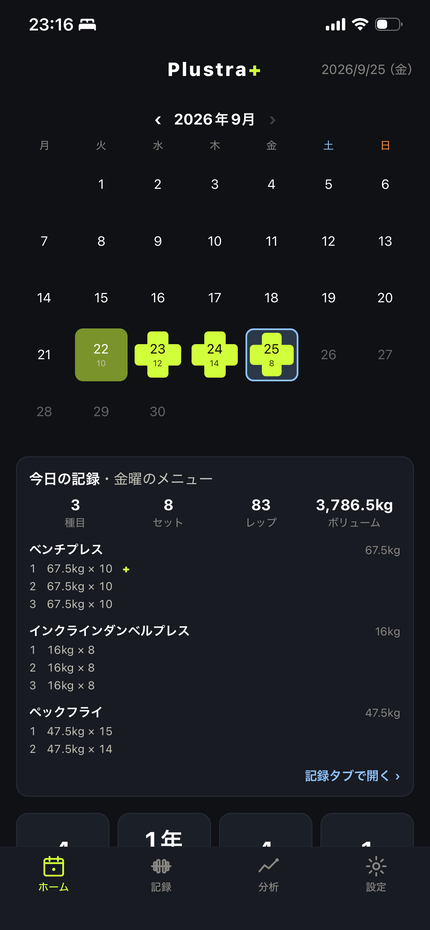
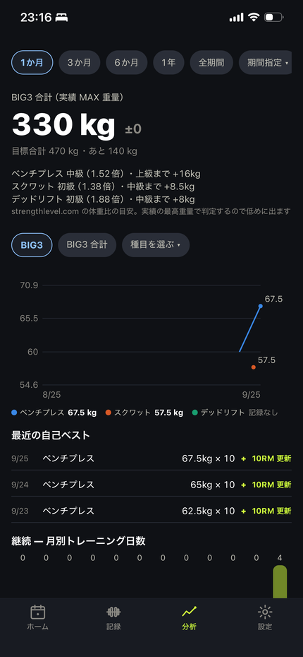

Plustra+
LIMITS ARE MADE TO BE BROKEN.
ジムで、次の重量に迷わない。
BIG3 のための筋トレ記録アプリ。ジムで迷う時間をなくすために作りました。
App Store で近日公開できること
次の重量が決まる
前回の記録から、次のセットで挙げる重量を提案します。目標のレップを全セットこなせたら上げ、続けて届かなければ落とす。この判断をアプリが引き受けます。
記録はタップだけ
重量とレップをタップして「完了」。達成か未達かはレップ数から自動で判定します。セットごとにメモと RPE も残せます。
休憩タイマー
記録すると自動で始まります。アプリを閉じていても、画面を消していても通知で鳴ります。音楽は止めません。
BIG3 の伸びが一本の線で見える
合計の推移、種目ごとの自己ベスト、RM表、目標までの距離。体重比から BIG3 のレベルも判定します。
メニューは曜日でも、特別な日でも
曜日ごとのメニューに加えて、トップシングルやデロード週のような曜日に紐づかないメニューも作れます。
画面



このアプリがしないこと
- 記録画面に広告を出しません
- アカウント登録は不要です
- 記録は端末の中だけで扱います。外部のサーバーには送りません
無料で使えます
記録・提案・タイマー・メニューはすべて無料。分析も無料で直近1か月ぶん見られます。
Plustra Pro ― 買い切り ¥500
3か月・6か月・1年・全期間の推移、期間の自由な指定、種目ごとの全履歴、週に一度の自動バックアップ。追加の支払いはありません。